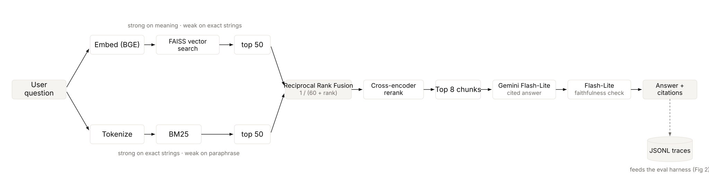
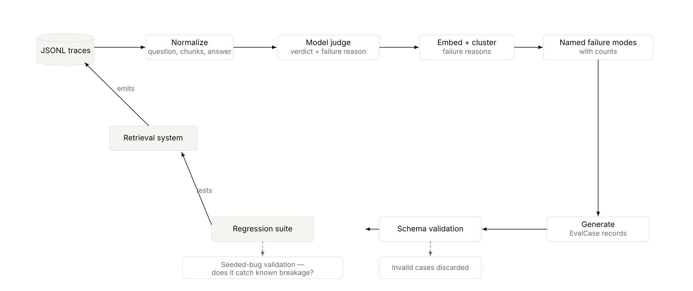

Retrieval that survives error codes and paraphrase alike, and an evaluation suite generated from the bot's own traffic.
A support bot for appliance manuals that pairs dense vector search with BM25 keyword search, fused by rank and reranked, so it handles both vaguely-worded symptoms and exact error codes, with every answer sentence cited and checked against its source. A companion system turns the bot's own logs into a regression test suite. Reranking lifted recall@10 from 0.78 to 0.94, 94% of answer sentences are grounded, and the generated suite surfaced a 14% failure rate concentrated in a single mode: answering an ambiguous question by assuming an appliance.
A support bot answering from official manuals has an unusual failure profile: users arrive with two incompatible query types. Symptom descriptions in casual language ("my fridge won't get cold") and exact tokens ("error CF", part numbers). These want opposite retrieval strategies, and a system tuned for one is measurably bad at the other.
The product question: is one embedding model enough, or does exact matching need to run alongside it? And, because a support bot that invents a repair step is a liability, how do you know the answers stay grounded over time, not just at launch?
To an embedding model, ten error-code passages that differ only in a two-letter code all say the same thing: a fault occurred, unplug it, call service. The token that distinguishes them is the one the model weights least.
The manual says "not maintaining temperature"; the user says "not getting cold". Zero content words shared. This is where keyword search fails and dense retrieval wins.
Wrong retrieval produces a fluent, confident, wrong answer. No exception, no error rate, nothing on a dashboard. Only an evaluation set catches it, and the generator below confirmed the bot's single largest failure mode is exactly this.
Two retrievers with complementary weaknesses run in parallel and are merged by rank, not by score. Dense vectors handle paraphrase; BM25 handles exact strings. The fused list is reranked by a cross-encoder that reads query and candidate together, and only the top chunks reach generation, where every sentence is cited and then checked against the chunk it cites.

Two retrievers with complementary weaknesses, fused by rank and reranked before generation. Reranking lifted recall@10 from 0.78 to 0.94. Every answer is logged.
Extract PDF text, strip the repeating headers and footers (left in, they become the most common text in the corpus and pollute every keyword score), unwrap line breaks, and chunk at ~300 words with 50 overlapping so a repair procedure is never severed mid-step. 13 manuals became 1,475 chunks.
BGE embeddings (BAAI/bge-large-en-v1.5) in a FAISS inner-product index over L2-normalised vectors, so every score is a cosine similarity in [-1, 1]; rank_bm25 over the identical chunks.
Reciprocal rank fusion, 1/(60 + rank) from each list. A chunk both retrievers rank highly collects from both and rises.
A cross-encoder (Cohere rerank-english-v3.0) scores the top 50 down to 8. Too slow for the whole corpus, which is why fast retrieval earns the candidate list first.
Cosine similarity lands around 0.4–0.8; BM25 is unbounded and routinely exceeds 3. Summing them lets BM25 shout down the vector signal for no principled reason, and any weighting has to be re-tuned the moment the embedding model changes. RRF discards magnitudes and keeps only positions, so it needs no normalisation and no weights.
150 / 300 / 600 words on the same gold set, scored by word-span overlap against the source document. The result contradicted the 300-word default: 150-word chunks scored recall 0.806 against 0.722 at 300 and 0.667 at 600, a tighter passage is less diluted by neighbouring text. The sweep is the deliverable; the default was wrong.
After fusion the scores are RRF sums around 0.03; after reranking they are on a different scale again. Cosine is the only one on a fixed interpretable interval, so it is what the "not in these manuals" threshold reads. Honest limitation: BGE cosine compresses on a small corpus, an off-topic "who won the World Cup" scored 0.50, above the 0.45 cutoff, so the threshold needs tuning per corpus.
The shared client attaches usage and latency to every response, so per-answer cost is a read over logs already written, not a separate pass. Measured: ~$0.0016 per answer, roughly $1.60 per 1,000 at paid-tier rates.
The second project treats the first's logs as raw material. The cases a system actually struggles with beat any you would invent, which the run proved: to give the generator something to find, the bot answered its clean gold set plus a slice of realistic traffic (ambiguous questions, out-of-scope ones, questions the manuals do not cover). On the clean gold set alone the bot was faithful and the judge found nothing; the failures live in the traffic, exactly as with real users.

The suite is generated from the system's own traces, it found a 14% failure rate, almost all one mode, then validated by seeding known bugs and confirming it catches them.
Normalise JSONL traces into question / retrieved chunks / answer. Logging is therefore a designed interface rather than debug output: a trace missing its chunk ids is useless here.
A cheap model rules each answer good or bad and names the failure. Rules can check form, is every sentence cited, does the citation exist, but not whether a passage about a washing machine answers a question about a refrigerator. That is the failure class rules miss entirely.
Embed the free-text failure reasons and cluster them, so many individual failures become a handful of named modes with counts. The 8 failures resolved into 5 modes, and 6 of the 8 were one family: the question named no appliance and the answer assumed one.
Emit Pydantic-validated EvalCase records whose target_failure_mode must be one the clustering actually discovered. An invented mode is rejected rather than silently corrupting the suite. 8 cases were emitted, 0 rejected.
All four systems on the same 36-question gold set, a hybrid number alone proves nothing:
| System | recall@10 | nDCG@10 |
|---|---|---|
| vector-only (baseline) | 0.778 | 0.547 |
| BM25-only | 0.500 | 0.364 |
| hybrid (RRF) | 0.722 | 0.460 |
| hybrid + rerank | 0.944 | 0.754 |
Two honest notes. First, the reranker is what earns the jump: RRF alone actually scored below vector-only here (0.722 vs 0.778), because the gold set is symptom-dominated and dense retrieval already handles those, the cross-encoder is what closes the gap and then some. Second, the verified gold set is 35 symptom questions and 1 error-code question, so the error-code column is a single data point and is reported as such, not as a rate; the genuine error-code-vs-symptom comparison is named as the top next-iteration priority.
The suite is validated by seeding bugs of rising subtlety. Stripping every citation, and replying "I do not know" to everything, are caught at the floor. The subtle case is an answer that is fluent, fully cited, and says nothing. Mining logs gets you the failures you have, never the ones you have not had yet, and on this small corpus the generated assertions also over-trigger on healthy answers, so the 100% seeded-bug catch comes with imperfect discrimination that a larger trace corpus would sharpen.
A judge is perfectly self-consistent when it is wrong; it will never tell you. So 30 traces were hand-labelled and agreement measured: 87%. The interesting part is the direction of the 4 disagreements, every one was the judge flagging an answer the human accepted (the ambiguous-appliance answers a person reads as "good enough for a small model"). The judge is stricter than the human, which for a regression detector is the safer bias, but it is a bias, and naming it is the point. A subtler trap also had to be fixed during the build: with a soft prompt the judge rubber-stamped everything as good, and only an explicit rubric with a worked example made it discriminate.
The measured cost is one extra index and one rerank call; the benefit is recall@10 from 0.78 to 0.94 and an entire query class dense retrieval misranks. Measure judge-vs-human agreement before trusting any number the judge produces, here it was 87%, and the disagreements were all in one direction.